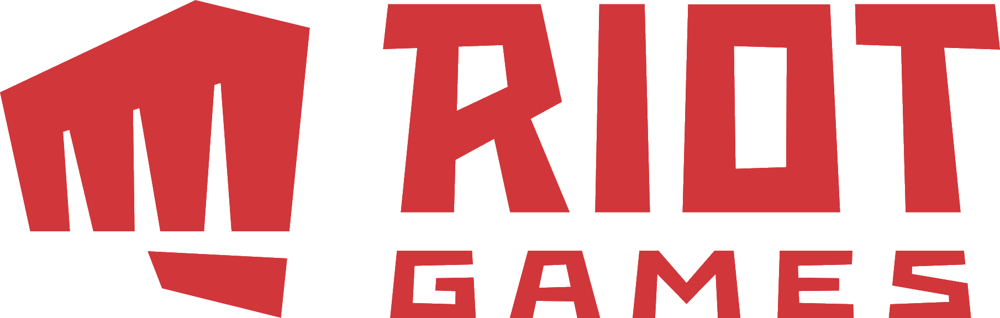

텐센트 산하 미국 게임 개발 회사이며 e스포츠 대회 주최/운영사. 마크 메릴과 브렌든 벡이 2006년에 공동창업한 회사이며 유명 게임 리그 오브 레전드 개발사이기도 하다. 도타 올스타즈의 개발자였던 구인수를 영입해서 첫 작품인 리그 오브 레전드를 개발했고, 출시 2개월만에 동접 10만명을 달성했고 현재 세계에서 가장 많이 플레이하는 게임중 하나이며 매달 플레이하는 유저의 수(MAU)가 1억명을 넘는다.